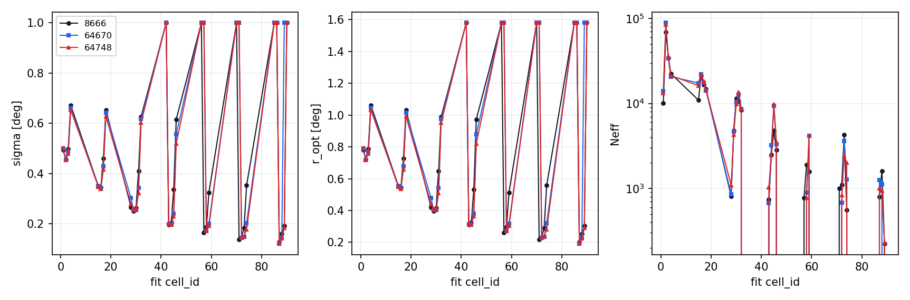
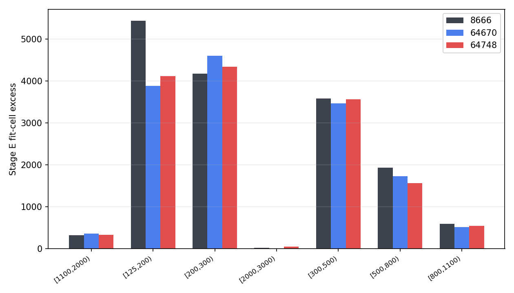
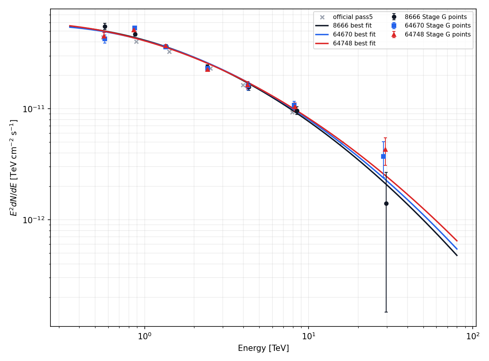
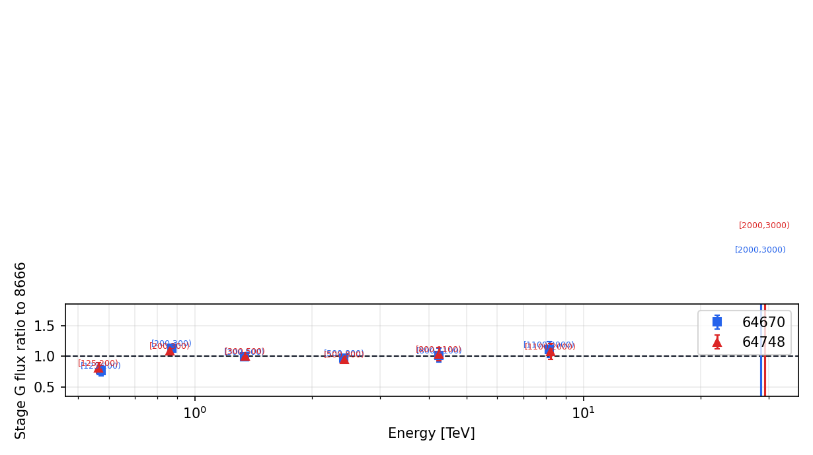

Crab SED v5 model compare
Three reconstruction models are run through the same split56 v4-baseline analysis contract on the aligned 1258-file observation set. The official/reference SED points are plotted as context only; the main comparison is the three model branches.
Model Provenance
| model | run_dir | tag | train dcedge_min | theta_embed_dim | use_core_box | Stage A run_dir | MC binned root | Stage A response | Aeff status |
|---|---|---|---|---|---|---|---|---|---|
| 8666 | theta_recoxy_position_embed_midenergy_8666 | theta_recoxy_position_embed_midenergy | 20 | 16 | False | theta_recoxy_position_embed_midenergy_8666 | WCDA_simulation_binned_response_v4_split56_ridge | primary_thrown_aperture_conditioned_response | available |
| 64670 | theta_recoxy_position_embed_midenergy_no_core_cut_64670 | theta_recoxy_position_embed_midenergy_no_core_cut | 0 | 16 | False | theta_recoxy_position_embed_midenergy_no_core_cut_64670 | WCDA_simulation_binned_response_v6_64670_split56_candidate | primary_thrown_aperture_conditioned_response | available |
| 64748 | theta_recoxy_position_embed_noemax_no_core_cut_64748 | theta_recoxy_position_embed_noemax_no_core_cut | 0 | 16 | False | theta_recoxy_position_embed_noemax_no_core_cut_64748 | WCDA_simulation_binned_response_v7_64748_split56_fit33 | primary_thrown_aperture_conditioned_response | available |
Baseline Contract
Fit cells are the fixed v4 split56 physical bins selected from ../output/model_compare_v5/config/v4_split56_fit33_physical_bins.csv. Non-8666 selectors are mapped by (nhit_bin,predE_bin), not by old cell id.
| model | fit cells | included cell_ids | first physical bins |
|---|---|---|---|
| 8666 | 33 | 1,2,3,4,15,16,17,18,28,29,30,31,32,42,43,44,45,46,56,57,58,59,70,71,72,73,74,85,86,87,88,89,90 | [125,200) / [2,2.5); [125,200) / [2.5,3); [125,200) / [3,3.25); [125,200) / [3.25,3.5); [200,300) / [2.5,3); [200,300) / [3,3.25); [200,300) / [3.25,3.5); [200,300) / [3.5,3.75); ... |
| 64670 | 33 | 1,2,3,4,15,16,17,18,28,29,30,31,32,42,43,44,45,46,56,57,58,59,70,71,72,73,74,85,86,87,88,89,90 | [125,200) / [2,2.5); [125,200) / [2.5,3); [125,200) / [3,3.25); [125,200) / [3.25,3.5); [200,300) / [2.5,3); [200,300) / [3,3.25); [200,300) / [3.25,3.5); [200,300) / [3.5,3.75); ... |
| 64748 | 33 | 1,2,3,4,15,16,17,18,28,29,30,31,32,42,43,44,45,46,56,57,58,59,70,71,72,73,74,85,86,87,88,89,90 | [125,200) / [2,2.5); [125,200) / [2.5,3); [125,200) / [3,3.25); [125,200) / [3.25,3.5); [200,300) / [2.5,3); [200,300) / [3,3.25); [200,300) / [3.25,3.5); [200,300) / [3.5,3.75); ... |
Observation Alignment
Canonical manifest: ../output/model_compare_v5/common_1258_file_manifest.csv; manifest months: 202201=658, 202202=600. All Stage C jobs were run without --allow-entry-mismatch.
| model | eval links | time links | eval symlinks | time symlinks | missing manifest eval | missing manifest time | extra eval | extra time | 0131 eval | root months | Stage C input | processed | Stage C missing time | entry mismatch | allow mismatch | Stage C months |
|---|---|---|---|---|---|---|---|---|---|---|---|---|---|---|---|---|
| 8666 | 1,258 | 1,258 | 1,258 | 1,258 | 0 | 0 | 0 | 0 | 0 | 202201,202202 | 1,258 | 1,258 | 0 | 0 | False | 202201=658; 202202=600 |
| 64670 | 1,258 | 1,258 | 1,258 | 1,258 | 0 | 0 | 0 | 0 | 0 | 202201,202202 | 1,258 | 1,258 | 0 | 0 | False | 202201=658; 202202=600 |
| 64748 | 1,258 | 1,258 | 1,258 | 1,258 | 0 | 0 | 0 | 0 | 0 | 202201,202202 | 1,258 | 1,258 | 0 | 0 | False | 202201=658; 202202=600 |
Rayleigh PSF Quality

| model | median sigma deg | median r_opt deg | median containment | min Neff | warning cells | warning cell ids |
|---|---|---|---|---|---|---|
| 8666 | 0.3508 | 0.5542 | 0.7103 | 0 | 12 | 1,4,28,42,43,56,59,70,73,85,86,90 |
| 64670 | 0.43 | 0.6794 | 0.713 | 0 | 11 | 1,42,56,57,70,71,74,85,86,89,90 |
| 64748 | 0.3477 | 0.5493 | 0.6969 | 0 | 10 | 1,28,42,56,57,70,71,85,86,90 |
Stage E Signal

| model | N_on | B_on | excess | conservative err | quality | quality note |
|---|---|---|---|---|---|---|
| 8666 | 116,635 | 1.00547e+05 | 16088 | 466 | failed | total formal sigma 45.9555 outside [50, 300] |
| 64670 | 117,222 | 1.02664e+05 | 14558 | 468.9 | failed | total formal sigma 40.7374 outside [50, 300] |
| 64748 | 114,721 | 1.00193e+05 | 14528 | 463.6 | failed | total formal sigma 44.8488 outside [50, 300] |
Stage F Fit
| model | preferred | phi0 | gamma/alpha | beta | chi2 / ndof | chi2/ndof | max |pull| |
|---|---|---|---|---|---|---|---|
| 8666 | logpar | 2.4701e-12 | 2.718 | 0.1377 | 112.9 / 30 | 3.762 | 5.434 |
| 64670 | logpar | 2.4886e-12 | 2.697 | 0.1326 | 130.9 / 30 | 4.365 | 6.331 |
| 64748 | logpar | 2.4695e-12 | 2.686 | 0.1194 | 110.9 / 30 | 3.695 | 6.238 |


Stage G SED


Warnings And Deviations
8666: Stage E quality gate failed (total formal sigma 45.9555 outside [50, 300])
8666: Stage D promotion status blocked_quality_gate
8666: PSF warnings in 12 fit cells
64670: Stage E quality gate failed (total formal sigma 40.7374 outside [50, 300])
64670: Stage D promotion status blocked_quality_gate
64670: PSF warnings in 11 fit cells
64748: Stage E quality gate failed (total formal sigma 44.8488 outside [50, 300])
64748: Stage D promotion status blocked_quality_gate
64748: PSF warnings in 10 fit cells
Checklist
| item | status |
|---|---|
| symlink roots validated | pass |
| three Stage C 1258-file gates passed | pass |
| three Stage F/G completed | pass |
| report exists | pass |
| warnings/deviations captured | pass |